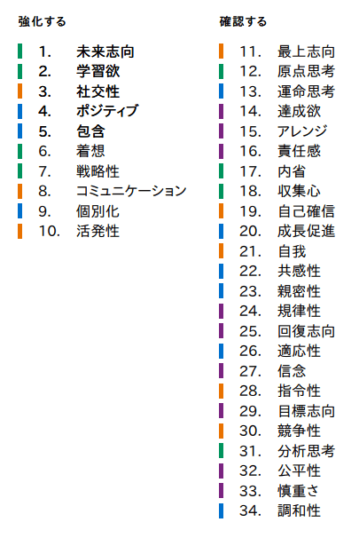

Appraisal
価値を見立てる
PSAカード、株式投資、せどり、AIツール。新しい領域に入り、学びながら「これは伸びるかも」を探す。
Profile
プロフィールでいちばん強く残るのは、「人と話しながら進めたい」「相手が喜ぶ小さな成功を支えたい」という温度です。カード鑑定も、製薬営業も、キャンプもサウナも、点ではなく「人と価値を見つける場」としてつながっています。
一緒に仕事ができて良かったと思われる人間になる。
ゆうさんの人生のMISSION
相手がどうすれば喜んでくれるか、自分に何が出来るかをずっと考えてきた。
本業でのエリアマーケティング・企画提案から
相手が喜んでくれながら小さな成功をサポートすることが非常に嬉しい。
ゆうさんの強みが発火する瞬間
ゆうさんの強みは、ひとりで完璧な答えを出すより、場を囲んで話しながら「それ、面白そう」を育てる時に立ち上がる。
Core Theme
カード鑑定で価値を見立てる。製薬営業で相手が喜ぶ提案にする。リベで仲間と話して視野を広げる。別々に見える行動の奥にあるのは、「いいものを見つけて、相手に届く言葉と場を作る」力です。
PSAカード、株式投資、せどり、AIツール。新しい領域に入り、学びながら「これは伸びるかも」を探す。
数字や事実だけではなく、「なぜ面白いのか」「誰に合うのか」まで言葉にする。ここにコミュニケーションが出る。
新しい出会いを楽しみ、相手ごとの入り口を作る。リベ仲間を増やしたい気持ちは、包含と個別化の自然な表れ。
完璧に整ってからではなく、まず試して学ぶ。副業1stキャッシュや転職後の再始動にも活発性が出ている。
Top 10
CliftonStrengthsは「向いている仕事を一発で決めるもの」ではありません。ここでは、ゆうさんがつい自然にやっている思考・感情・行動のパターンを、日常と副業で使いやすくするための取扱説明書として読みます。

Strengths Branch
メインHPは「ゆうさん全体の取説」。資質ブランチは、TOP10を1つずつ開いて、カード鑑定・営業・リベ活でどう出るか、使いすぎると何が起きるか、セッションで何を聞くかまで見る補足ページです。
未来志向、学習欲、社交性など、TOP10を1つずつ本人語に翻訳。
製薬営業、カード鑑定、せどり、AI活用、リベ交流に接続。
熱量、広げすぎ、確認不足など、空回りの兆候もやさしく確認。
質問と小さな実験に落として、ワクワクを現実に戻す。
Domains
TOP10の配分は、戦略的思考力4、影響力3、人間関係構築力3、実行力0。これは、硬い手順で積み上げるよりも「未来の仮説を立て、人に話し、小さく試す」ほど強みが出る配置です。
未来志向、学習欲、着想、戦略性。まだ見えていない可能性を見つけ、学びながら道筋を増やす。
社交性、コミュニケーション、活発性。出会い、言葉にし、まず動かすことで周囲を巻き込む。
ポジティブ、包含、個別化。人の良さを見つけ、入れる場所を作り、楽しい空気へ変える。
TOP10にはなし。だからこそ、数字確認、リスク点検、締切管理は外部化すると安定する。
Story

製薬会社の営業で、エリアマーケティング、企画提案、戦略立案をしてきたゆうさん。プロフィールには「相手がどうすれば喜んでくれるか、自分に何が出来るかをずっと考えてきた」とあります。

2024年に同業界での転職に成功し、自分の時間を持てるようになったこと。株式投資、せどり、カード販売、AIでの効率化へ興味を広げていること。ここには、未来志向と学習欲のエンジンが見えます。
カード鑑定は、ただの売買ではない。価値を見立て、背景を語り、次の選択肢を一緒に作る場所。
Combos
未来の絵を描き、学びを集め、複数ルートを比較する。転職、副業ジャンル拡張、AI活用はこのコンボが動いている。
初対面の人にも声をかけ、楽しい空気にし、物語として伝える。オフ会やカード鑑定の入り口づくりと相性がいい。
みんな違っていい、でも置いていかない。相手ごとに刺さる言葉や役割を見つけて、輪に入れる。
ひらめきを学びで膨らませ、まず現場で試す。うまくいったらストーリー化して次の人へ渡せる。
Owner's Manual
強みは、合う環境では自然に加速します。反対に、合わない環境では同じ資質が空回りします。ゆうさんの場合は「未来」「学び」「人との対話」「相手の喜び」がスイッチです。
Aruaru
未来志向・学習欲・着想の連動。株、カード鑑定、AI、せどりツールなど「これ伸びるかも」が見えると一気に前のめりになる。
社交性・コミュニケーション・戦略性。黙って考えるより、会話の中で「その手があったか」が出やすい。
包含・個別化・ポジティブ。誰の何に役立つのかが見えないと、ただの作業になりやすい。
活発性と下位の分析思考・慎重さの組み合わせ。悪いことではなく、確認役やチェックリストを外付けすれば強みに戻る。
Tuning
ゆうさんの取説で大事なのは、勢いを止めることではありません。未来を描く力、人を巻き込む力、まず試す力を残したまま、数字・締切・リスク確認だけ別レーンで支えることです。
アイデア段階では最高。ただし副業では、仕入れ・在庫・利益率の上限を先に決めておくと安心。
分析思考が下位だからこそ、Notion・スプレッドシート・AIチェック・第三者レビューで淡々と補う。
喜んでもらいたい気持ちが強い分、全部拾いすぎると疲れる。対応範囲を先に決めると包含が長持ちする。
会話で広げた後は「次にやること」「やらないこと」「確認する数字」を1枚に落とすと、強みが成果に変わる。
Card Appraisal
2020年にPSAカード鑑定副業を開始。2021年に1stキャッシュ、2022年に年間利益100万円、2024年にキャンプ用品とPSAで利益150万円突破。販売実績は約1,500件。ここには、学習欲・戦略性・コミュニケーション・活発性がまとまって出ています。
紹介をきっかけに、カード鑑定の世界へ。学習欲が新しい副業の入口を開いた時期。
まずやってみる活発性が、実績として形になり始める。
チーミングへの関心と、カード販売の実績が並行して伸びた年。
同業界への転職で時間を整え、キャンプ用品とPSAでフリマサイト利益150万円突破。
AIでの業務効率化、コーチングスキル、せどりツール作成も視野に、次の勝ち筋を探している。
Session Flow
ゆうさんの強みは、広がりと熱量です。だからこそ、セッションでは「どんな未来を作りたいか」と「そのために何を仕組み化するか」をセットで扱うと、ワクワクが現実に落ちます。
仕事、カード鑑定、家族、リベ活で「喜ばれた瞬間」を先に集める。
未来志向、学習欲、社交性、ポジティブがどんな場面で出るかを確認する。
PSAカード鑑定、せどり、AI、コーチングを「相手が喜ぶ入口」に翻訳する。
初心者向けカード鑑定メモ、オフ会スライド、販売チェックリストなどに落とす。
2026年の副業利益200万円の先に、どんな家族時間や働き方を作りたいですか。
PSAカード鑑定で、人に一番喜ばれた瞬間はどんな場面でしたか。
本業で「一緒に仕事ができて良かった」と言われた時、ゆうさんは何をしていましたか。
数字、ルール、リスク確認を、誰や何の仕組みで補うと一番気持ちよく進めますか。